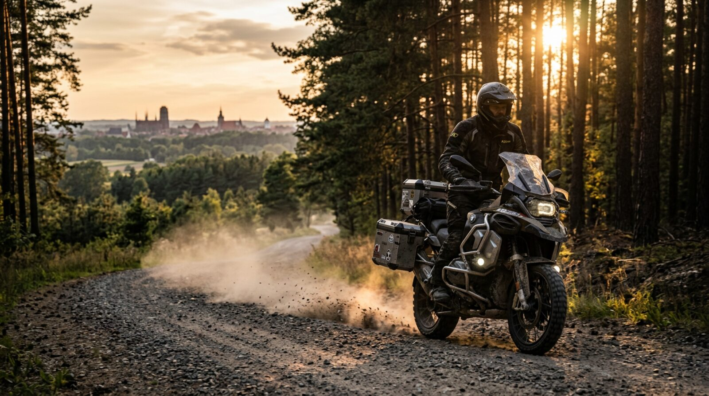
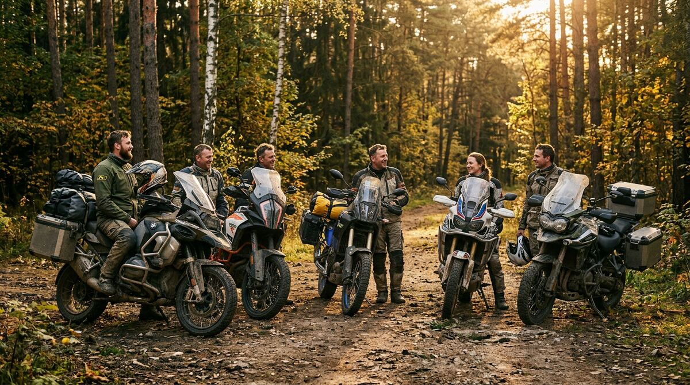

Planer z prawdziwą trasą
Klikasz punkty — dostajesz rzeczywisty przebieg drogi, dystans, czas jazdy i prognozę pogody. Bez rysowania patyków na mapie.

Toruń · Kujawy · Bory Tucholskie · cała Polska
Planuj trasy motocyklowe w kilka kliknięć, dziel się nimi ze społecznością, zbieraj punkty i wpadaj na wspólne wyjazdy. Wszystko w jednym miejscu — mapa, dystans, czas jazdy, koszt paliwa i ludzie, którzy jadą tak samo jak Ty.
Bo ustalanie wyjazdu w 400 wiadomościach to nie jest plan.
Klikasz punkty — dostajesz rzeczywisty przebieg drogi, dystans, czas jazdy i prognozę pogody. Bez rysowania patyków na mapie.
Jedna trasa, jeden zapis: kto jedzie, kto wrzucił zmianę, co ustaliliście w komentarzach. Zero „a gdzie zbiórka?”.
Punkty za trasy, udział w wyjazdach i propozycje zmian. Odznaki za szuter, maratony i odkrywanie nowych dróg.
Katalog marek i modeli z realnymi widełkami cen, mocą, masą i spalaniem. Ustaw swój motocykl — planer policzy koszt paliwa.
Eksportuj trasę do nawigacji, kopiuj link, instaluj jako aplikację. Lista punktów zostaje w kieszeni, gdy w Bory nie ma zasięgu.
Checklista sprzętu, zasady jazdy w grupie i rozsądne tempo. Bo najlepsza trasa to ta, po której wracasz z uśmiechem.
Trzy kroki od pomysłu do wyjazdu.
Start, metę i miejsca po drodze. Możesz też włączyć pętlę, gdy chcesz wrócić do domu tą samą ekipą.
Nazwa, region, trudność, nawierzchnia. Planer dobierze dystans, czas i policzy paliwo dla Twojego motocykla.
Wrzuć trasę do społeczności, zbierz „biorę udział”, dopnij szczegóły i w drogę.
Ostatnio dodane propozycje — wpadnij, dopisz komentarz, dołącz do wyjazdu.

Moto Świry Toruń to ludzie, którzy w piątek po pracy potrafią wsiąść na motocykl i wrócić w niedzielę wieczorem. Czasem po szutrach Chełmińskiego Parku Krajobrazowego, czasem nad Wisłę na kawę w Chełmnie, a czasem na drugi koniec Polski po górskie serpentyny.
Warstwa „Punkty” w planerze pokazuje miejsca, które warto mieć zaznaczone: widoki, stacje 24h, jedzenie, pola namiotowe, warsztaty.
Kliknij kategorię na mapie planera, aby filtrować punkty. Każdy punkt możesz wrzucić jednym kliknięciem do trasy jako punkt pośredni.
Krótko i konkretnie.
Każdy, kto ma motocykl i dobry humor. Nie ma zapisów, składek ani minimalnej pojemności. Zaczynamy od krótkich tras wokół Torunia, a kończymy tam, gdzie akurat poniesie.
Nie. Planer, mapa, eksport GPX i katalog motocykli działają bez konta. Konto potrzebne jest tylko do publikowania tras, udziału w wyjazdach i punktów w rankingu.
Za opublikowanie trasy, dołączenie do wyjazdu i wrzucenie propozycji zmiany trasy. Punkty naliczają się automatycznie, a odznaki za wyjątkowe wyczyny (długość, szuter, liczba wyjazdów) dodają kolorytu.
Trasy są propozycjami społeczności i mogą prowadzić drogami gruntowymi, przez prywatne tereny albo odcinki w remoncie. Zawsze sprawdź aktualny stan drogi, oznakowanie i przepisy. Jedziesz na własne ryzyko, z pełnym wyposażeniem i rozsądkiem.
To widełki orientacyjne dla rynku wtórnego w Polsce, opracowane na podstawie ogłoszeń i wycen. Ceny zmieniają się szybciej niż cokolwiek innego w motocyklach — traktuj je jako punkt odniesienia do negocjacji.
Klikaj na mapie, przeciągaj punkty, dodawaj przystanki. Trasę policzymy po prawdziwych drogach.
Propozycje Moto Świrów — od krótkich pętli po Toruniem po wyprawy na drugi koniec Polski.
Wczytywanie trasy…
Punkty za trasy, wspólne wyjazdy i propozycje zmian. Aktualizuje się na żywo.
| # | Motocyklista | Motocykl | Trasy | Wyjazdy | Punkty | Odznaki |
|---|---|---|---|---|---|---|
| Ładowanie… | ||||||
Orientacyjne widełki cenowe z polskiego rynku wtórnego plus moc, masa, spalanie i kategoria prawa jazdy.
Konkrety, które ratują wyjazd — od checklisty sprzętu po zasady jazdy w grupie.
Planer liczy paliwo na podstawie spalania Twojego motocykla ustawionego w garażu. Do tego dolicz kawę, obiad i nocleg, jeśli trasa jest kilkudniowa. Prosty wzór: kilometry × spalanie / 100 × cena paliwa. Przy 300 km, 5 l/100 km i paliwie 6,50 zł wychodzi ok. 97 zł na motocykl.
Ceny paliw zmieniają się co tydzień — podaj aktualną cenę w garażu, a planer przeliczy koszt automatycznie.
Twoje dane, motocykl, punkty i trasy.